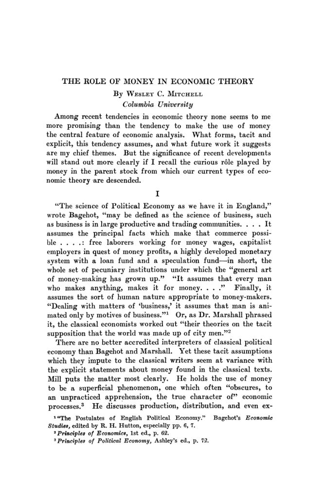

Washington, 1915: o custo da guerra, o orçamento e o paradoxo do Alabama
Leitura: 5 min
Washington, dezembro de 1915: Willcox resolve a repartição da Câmara, Clark calcula quando uma guerra deveria acabar, Rossiter soma as dívidas e Cleveland defende o orçamento como governo visível.


Em 1881, as tabelas preparadas para o Congresso americano mostraram uma anomalia célebre. Numa Câmara de 299 membros, o Alabama teria direito a 8 representantes; numa de 300, a apenas 7. Walter F. Willcox, da Cornell University, presidente da American Economic Association, usou esse paradoxo do Alabama para abrir o problema de seu discurso anual, lido em Washington numa sessão conjunta com a American Historical Association.
O suplemento de março de 1916 da American Economic Review reúne os textos e os debates da vigésima oitava reunião anual da associação, de 28 a 30 de dezembro de 1915. A reunião, marcada para Lexington, no Kentucky, mudou-se para Washington para cooperar com o Segundo Congresso Científico Pan-Americano, com o qual a associação fez sua última sessão. A guerra europeia ocupou boa parte do programa, ao lado do orçamento público, da teoria econômica e da fixação de preços no varejo.
Como repartir as cadeiras da Câmara?
Willcox propôs dois testes para uma repartição justa: a razão entre habitantes e representantes de cada estado deve ficar o mais perto possível da razão padrão, e o método não pode favorecer sistematicamente os estados grandes ou os pequenos. Por esses testes, condenou tanto a regra antiga de rejeitar todas as frações quanto o método de Vinton, usado de 1850 a 1900, e defendeu o método das frações maiores, adotado na lei de 1911 sem oposição. Com ele, sustentou, o Congresso poderia fixar antes de cada censo o tamanho da Câmara, que vinha crescendo sem freio.
Quanto custa uma guerra?
John Bates Clark, da Columbia University, tratou a guerra como uma descapitalização em vasta escala e propôs uma fórmula para o momento em que vencedor e vencido teriam interesse em negociar: o mais forte pode exigir o que obteria indo até o fim, menos o custo de ir até o fim. William S. Rossiter, de Concord, em New Hampshire, levou a questão para os números, a partir das estimativas de Edgar Crammond e da comparação com o fim das guerras napoleônicas. O texto de Clark tem página própria.
O que um orçamento muda no governo?
Frederick A. Cleveland, do Bureau of Municipal Research de Nova York, acompanhou uma sessão da Assembleia de Ontário para mostrar o orçamento como instrumento de prestação de contas em público, e o contrastou com as dotações americanas, decididas em comissões fechadas. Emory R. Johnson, da University of Pennsylvania, e Willard Straight trataram do comércio e do crédito com a América do Sul. O texto de Cleveland tem página própria.
O que se discutiu sobre teoria e preços?
Jacob H. Hollander, da Johns Hopkins University, acusou a teoria americana de parar na inferência sem passar à verificação. Wesley C. Mitchell, da Columbia, viu no uso do dinheiro o centro natural da análise econômica. F. W. Taussig, de Harvard, examinou a prática dos fabricantes de fixar o preço de revenda de seus produtos e concluiu que a defesa dela não estava provada.
Como terminou a reunião?
T. N. Carver foi eleito presidente para o ano seguinte, e os sócios preferiram Columbus, em Ohio, a Lexington para a reunião de 1916. O secretário registrou 2.444 sócios e assinantes, e o volume traz a declaração de princípios da comissão sobre liberdade e estabilidade acadêmicas, presidida por E. R. A. Seligman.
Na minha leitura
Na minha leitura, o volume tem um fio comum, que é a pergunta sobre o que se pode medir e como testar o que se mede. Willcox resolve a repartição da Câmara definindo critérios verificáveis antes de escolher o método; Clark separa os custos da guerra que se prestam à medida dos que não se prestam; Rossiter procura em 1816 um padrão para julgar as dívidas de 1915; Hollander cobra da teoria o passo da verificação.
O contraponto está em Mitchell, para quem a própria economia monetária fornece a unidade de medida que torna a teoria possível. Juntos, os textos mostram a profissão tentando transformar perguntas de política, como quanto custa uma guerra ou como controlar o gasto público, em perguntas que admitem resposta numérica.
Glossário
- Método das frações maiores
- regra de repartição em que, dividida a população de cada estado pela razão escolhida, toda fração maior que meio dá direito a mais um representante.
- Método de Vinton
- regra que parte do tamanho da Câmara, calcula a razão média e distribui as cadeiras restantes pelas maiores frações; usada de 1850 a 1900.
- Paradoxo do Alabama
- anomalia em que, ao se aumentar o tamanho da Câmara, um estado perde uma cadeira.
- Guerra de atrito
- guerra decidida pelo desgaste acumulado de homens e recursos, e não por manobras decisivas.
- Descapitalização
- destruição ou consumo do estoque de capital, em vez de sua manutenção ou aumento.
- Comissão de suprimento
- no modelo parlamentar britânico, a Casa reunida em comissão para examinar e votar as despesas.
- Manutenção de preços
- prática do fabricante de fixar o preço a que seu produto deve ser revendido no varejo.
- Equação de trocas
- relação entre moeda, velocidade de circulação, volume de transações e nível de preços, na formulação de Irving Fisher.
Artigos (20)
- The Apportionment of Representatives: Annual Address of the President — Walter F. Willcox, Cornell University; discurso presidencial (pp. 3–16). Willcox rompe com a tradição dos discursos presidenciais e trata de um problema técnico: como repartir as cadeiras da Câmara dos Representantes entre os estados segundo seus números, como manda a Constituição. Entre 1790 e 1911, dois métodos se alternaram. O da razão assumida parte de um número de habitantes por representante; o de Vinton, usado de 1850 a 1900, parte do tamanho da Câmara e divide a população por ele. Willcox propõe dois testes: a razão de cada estado deve ficar o mais perto possível da razão padrão, e o método não pode favorecer sistematicamente estados grandes ou pequenos. A regra de rejeitar todas as frações, usada até 1830, falha nos dois; refeitas as repartições de 1790 a 1840, os estados populosos teriam recebido, em conjunto, treze cadeiras a mais do que lhes cabia. O método de Vinton produz o paradoxo do Alabama e, perto do limite inferior, resultados absurdos. A tese é que o método das frações maiores, adotado em 1911 com uma série de razões de fronteira, é o correto e constitucional, e que ele permite enfim fixar o tamanho da Câmara antes de cada censo. JSTOR
- Probable Changes in the Foreign Trade of the United States Resulting from the European War — Emory R. Johnson, University of Pennsylvania (pp. 17–25). Johnson parte dos quatro fatores do êxito no comércio exterior: eficiência na produção, bons métodos de venda, bancos internacionais adequados e transporte barato por terra e mar. A guerra, diz, mudou a atitude dos empresários e do governo, em parte por efeitos temporários, e mostrou que as exportações não crescem por muito tempo sem importações correspondentes; a América do Sul, dependente das finanças europeias, não pôde comprar mais dos Estados Unidos. Defende proteção temporária adequada aos corantes, cuja tarifa os químicos consideravam baixa. Registra os primeiros passos: o National City Bank abrira três agências no Brasil, uma na Argentina, uma no Uruguai e uma em Cuba, enquanto mais de cem bancos europeus somavam mais de dois mil ramos no exterior; e nascera a American International Corporation. Propõe uma junta federal de navegação, com três comissários, para rever as leis marítimas e subvencionar algumas linhas, mas rejeita a propriedade estatal de navios. Pede portos planejados como os de Liverpool, Antuérpia, Roterdã e Hamburgo, e fecha com um alerta contra superestimar os efeitos permanentes da guerra sobre o comércio americano. JSTOR
- Probable Changes in the Foreign Trade of the United States Resulting from the European War--Discussion — M. J. Bonn, G. D. Hancock, Carl E. Parry, B. Olney Hough, Ralph H. Hess e R. R. Bowker (pp. 26–49). Moritz J. Bonn, da Universidade de Munique, sustenta que a guerra revelou o perigo da interdependência internacional e prevê mais autossuficiência nacional, monopólios de importação e obstáculos crescentes ao comércio. Glover D. Hancock lembra que, em 1913, a América do Sul respondia por cerca de 8% do comércio exterior americano. Carl E. Parry espera um período de tarifas mais altas e pede política comercial contínua. B. Olney Hough insiste nos métodos de venda; Ralph H. Hess admite justificar a marinha mercante pela economia nacional, mesmo com propriedade estatal inicial. R. R. Bowker critica a aplicação extrema da Lei Sherman e espera juros europeus mais altos depois da guerra. JSTOR
- Budget Making and the Increased Cost of Government — Frederick A. Cleveland, Bureau of Municipal Research, Nova York (pp. 50–70). Cleveland sustenta que 126 anos de eleições frequentes para mandatos fixos não impediram o governo invisível nos Estados Unidos e vai buscar o contraste em Toronto. Acompanha a sessão de 1914 da Assembleia de Ontário: o chefe do governo anuncia que está pronto para prestar contas; os deputados fazem perguntas aos chefes de departamento no plenário; o tesoureiro apresenta as contas públicas e as estimativas e faz o discurso do orçamento, provocando a oposição a revelar suas posições; as estimativas são votadas item a item em comissão de toda a Casa, com cada ministro presente para defendê-las. Nos Estados Unidos, ao contrário, as dotações saem de comissões fechadas, no fim das sessões. Cleveland reúne exemplos de desperdício levantados pela comissão de economia do presidente Taft, que estimou em cerca de 30% a perda média nos escritórios de Washington estudados. Lista quatro elementos de um sistema orçamentário eficaz, de um Executivo responsável pela proposta a um meio de levar impasses ao eleitorado, e conclui que só uma emenda constitucional estabeleceria essas relações. JSTOR · ler o comentário
- Budget Making--Discussion — John A. Fairlie, S. Gale Lowrie e F. A. Cleveland (pp. 71–84). John A. Fairlie, da University of Illinois, observa que em Ontário o orçamento é preparado por ministros que são também líderes da maioria no Legislativo e que a proposta de Cleveland se aproxima mais do modelo alemão; prefere uma comissão financeira conjunta das duas Casas e maior participação do Executivo, sem reforma constitucional. S. Gale Lowrie, da University of Cincinnati, lembra que o custo do governo nacional chegara a US$ 1.115.000.000 e que, na Câmara, as dotações se dividiam entre nove comissões. Cleveland responde que os ministros de Ontário são executivos em todos os sentidos e que a comissão mista confunde a função crítica com a executiva. JSTOR
- The Economic Costs of War — John Bates Clark, Columbia University (pp. 85–93). Clark trata a guerra como fenômeno de dinâmica econômica que inverte os processos comuns: troca a produção competitiva pela destruição competitiva e é uma descapitalização em vasta escala, que troca a renda futura por um gasto pródigo no presente. Ainda assim, a guerra cabe na ciência econômica, como forma crua e destrutiva de uma função primária, a defesa da posse, que entre as nações ainda não tem tribunais nem polícia. Num cálculo estritamente econômico, matar homens pesa por ser seletivo: atinge os trabalhadores mais produtivos. O maior desastre econômico futuro seriam as dívidas de guerra, que pesariam sobre os trabalhadores e adiariam reformas. Clark propõe uma fórmula para o fim de uma guerra de atrito, tratando cada lado como uma máquina de calcular: o vencedor provável pode exigir o que obteria indo até o fim, menos o custo de ir até o fim, e o mais fraco tem interesse em aceitar logo, porque cada dia de luta piora os termos. Conclui pedindo um direito internacional definido, um tribunal para aplicá-lo e uma liga de nações. JSTOR · ler o comentário
- The Statistical Side of the Economic Costs of War — William S. Rossiter, Concord, N. H. (pp. 94–117). Rossiter parte das estimativas de Edgar Crammond, de quem critica a inclusão do valor capitalizado dos soldados mortos numa perda total depois comparada com a riqueza nacional, e reúne um custo direto e indireto da guerra de US$ 39.696.774.000 até 31 de julho de 1915. Mostra que as previsões britânicas de gasto subiam a cada mês; o primeiro-ministro anunciara que a despesa diária chegaria a quase US$ 25 milhões. Para criar padrões de comparação, volta a 1816, fim das guerras napoleônicas: a dívida britânica, de US$ 4,5 bilhões, equivalia a mais de um terço da riqueza nacional, estimada em US$ 12,5 bilhões, e foi aliviada pelo crescimento industrial do século seguinte, que ele não espera ver repetido. Em dezembro de 1915, as dívidas nacionais dos países em guerra somavam mais de oito vezes o total de 1816. Estima que, antes da guerra, já havia nesses países 5,6 milhões de mulheres a mais que homens, desequilíbrio que a guerra ampliaria. Conclui que as potências se aproximavam do fim dos grandes empréstimos de reservas, mas que nações em funcionamento não chegam de fato à bancarrota. JSTOR
- Economic Costs of War--Discussion — George E. Barnett e E. W. Kemmerer (pp. 118–123). George E. Barnett, da Johns Hopkins University, considera enganosa a comparação entre dívida e riqueza nacional: a riqueza só serve à guerra se puder ser vendida a estrangeiros ou trocada por bens externos, o que depende do acesso a fornecedores externos e da parcela investida no exterior. E. W. Kemmerer, de Princeton, dedica seus dez minutos às razões pelas quais o quadro não era tão negro: o consumo simplificado das famílias, a produção em larga escala de suprimentos e o trabalho de mulheres e idosos no lugar dos mobilizados. Acrescenta que a economia de ouro na Europa e o fluxo de ouro para os Estados Unidos significavam alta geral de preços. JSTOR
- Economic Theorizing and Scientific Progress — Jacob H. Hollander, Johns Hopkins University (pp. 124–139). Hollander examina trinta anos de especulação econômica americana, marcados por três episódios, Walker, Böhm-Bawerk e Clark. A acusação, diz, não é usar a dedução, mas usá-la de modo imperfeito. O método da ciência tem três passos, observação, inferência e verificação, e a teoria americana costuma parar no segundo. Testa a tese em quatro doutrinas: a teoria dos rendimentos constantes de Henry C. Adams, a teoria do consumo de Simon N. Patten, a teoria dos salários de John B. Clark e a teoria da incidência tributária de E. R. A. Seligman. Nas quatro, encontra hipóteses sem confronto sistemático com os fatos. O dano indireto viria do exemplo: o gosto pelo comentário de doutrinas alheias, a moda dos manuais e as controvérsias metafísicas sobre termos e conceitos últimos. Como contraste, cita trabalhos empíricos de Taussig sobre comércio internacional, Ripley sobre ferrovias, Kemmerer e Fisher sobre preços, Moore e Barnett sobre salários, Mitchell e Persons sobre crises e T. S. Adams e Plehn sobre tributação. O remédio para uma meia ciência, conclui com Poincaré, é mais ciência. JSTOR
- The Role of Money in Economic Theory — Wesley C. Mitchell, Columbia University (pp. 140–161). Mitchell vê como tendência mais promissora da teoria a de pôr o uso do dinheiro no centro da análise. Lembra que Bagehot e Marshall descreveram a economia clássica como ciência dos negócios, embora Mill tratasse o dinheiro como fenômeno superficial, e que Jevons, ao fundar a teoria no hedonismo, empurrou o dinheiro ainda mais para o fundo. A escola psicológica americana, de Fetter, Fisher e Davenport, acabou por trazê-lo de volta, e Davenport chegou a definir a economia como a ciência que trata os fenômenos do ponto de vista do preço. Marshall fez do dinheiro a balança do economista, e a teoria voltou, sem perceber, ao ponto de partida de Cournot, em 1838. Para Mitchell, o uso do dinheiro racionaliza a própria vida econômica: “O dinheiro pode não ser a raiz de todos os males, mas é a raiz da ciência econômica” (Money may not be the root of all evil, but it is the root of economic science). Propõe um quadro com três processos, o industrial, de fazer bens, o dos negócios, de ganhar e gastar dinheiro, e o subjetivo, de esforços e satisfações, que aproximaria a teoria da história econômica. JSTOR
- Tendencies in Economic Theory--Discussion — H. J. Davenport, W. H. Hamilton, Richard T. Ely, Irving Fisher e B. M. Anderson Jr. (pp. 162–169). H. J. Davenport, da University of Missouri, concorda com Hollander quanto ao método e diverge apenas nas aplicações. W. H. Hamilton, do Amherst College, descreve a disciplina como uma luta permanente entre relevância, que pede observação, e consistência, que pede generalização. Richard T. Ely diz que houve grande progresso desde a fundação da associação. Irving Fisher chama o texto de Hollander de o melhor sobre metodologia que já ouvira, mas pede que se critiquem também os fatos mal digeridos, não só as teorias mal acabadas. B. M. Anderson Jr., de Harvard, sustenta que a teoria estática repousa sobre o dinheiro e o crédito. JSTOR
- Price Maintenance — F. W. Taussig, Harvard University (pp. 170–184). Taussig trata da prática dos fabricantes de fixar o preço a que seus produtos serão vendidos no varejo, distinta do problema dos trustes, porque cada fabricante continua a competir com os outros. Por que alguém se preocuparia com o preço a que outro revende o que já comprou? Parte da resposta está na psicologia da demanda: nos artigos de prestígio, como os diamantes, o preço mais baixo pode reduzir a procura, e o artigo anunciado como de qualidade perde o prestígio quando aparece em liquidação. A outra parte está no comércio estabelecido: atacadistas e varejistas não gostam do corte de preços, e o produto cortado deixa de ser promovido. O argumento da qualidade, para Taussig, justifica a proteção das marcas, não a fixação de preços. O peso maior está no custo da distribuição, cuja margem entre produtor e consumidor é muito grande; só a liberdade de experimentar pode reduzi-la, e o preço fixo atrapalha o experimentador. Conclui que a defesa da manutenção de preços não está provada: os contratos deveriam ser tratados como restrições ao comércio, inexequíveis nos tribunais, mas não criminosos. JSTOR
- Price Maintenance--Discussion — L. H. Haney, W. F. Gephart, J. R. Turner, Paul T. Cherington e R. R. Bowker (pp. 185–209). L. H. Haney, da University of Texas, imagina o sistema generalizado e vê nele uma apoteose da publicidade, que desloca a ênfase da qualidade para a venda. W. F. Gephart, da Washington University, conclui que a medida não traria benefícios aos próprios interessados e seria inaplicável. J. R. Turner, de Cornell, defende o direito do fabricante de proteger o fundo de comércio ligado à sua marca. Paul T. Cherington, de Harvard, redefine a prática como acordo entre fabricantes e distribuidores sobre o preço de revenda. R. R. Bowker cita a experiência das editoras de livros com o sistema de preço líquido. JSTOR
- The Relation of Public Finance to Private Credit — Willard Straight, Nova York (pp. 210–215). Straight, lido na sessão conjunta com o Segundo Congresso Científico Pan-Americano, em 30 de dezembro de 1915, trata o crédito privado como base de qualquer expansão financeira internacional. Os Estados Unidos, diz, tinham tomado emprestado da Europa com facilidade e por isso demoraram a criar uma política financeira coerente; o Federal Reserve Act, ao liberar reservas, ampliou os recursos de crédito pouco antes da guerra. Descreve como Grã-Bretanha e França organizaram o crédito nacional: em Londres, nenhuma emissão estrangeira podia ser feita sem permissão do Chanceler do Tesouro, e os investidores foram pressionados a vender títulos americanos. Nos Estados Unidos, o empréstimo anglo-francês mobilizou capital privado para financiar exportações, e quem o comprou prestou, a seu ver, um serviço público. Com a América do Sul, os negócios passavam antes por Londres e Paris; a guerra levou a agências do National City Bank e à Conferência Financeira Pan-Americana. O Departamento de Estado, sustenta, pode ajudar a fazer cumprir contratos justos, mas não deve agir como agência de cobrança. Conclui que assegurar o crédito público é salvaguardar o privado. JSTOR
- Minutes of Business Meetings at Washington: December 28 to 30, 1915 — Atas da associação (pp. 216–219). Atas das reuniões de 28 a 30 de dezembro de 1915, no Hotel Raleigh. O comitê executivo autorizou um índice das publicações da associação e, diante de um empate entre Columbus e Lexington para a reunião seguinte, levou a escolha aos sócios, que preferiram Columbus. Willcox apresentou o relatório preliminar da comissão de estatísticas federais. R. R. Bowker propôs uma comissão sobre coordenação, eficiência e economia na tributação, remetida ao comitê executivo, e aprovou-se estudar um prêmio de monografia. Foram eleitos T. N. Carver presidente, P. M. Warburg, T. S. Adams e M. B. Hammond vice-presidentes e A. A. Young secretário-tesoureiro. Uma comissão de três estudaria a organização dos programas das reuniões. JSTOR
- Report of the Secretary for the Year ending December 17, 1915 — Allyn A. Young, secretário (pp. 220–223). O comitê executivo reuniu-se duas vezes, no City Club de Nova York, em 13 de março e 13 de julho. A reunião de dezembro, marcada para Lexington, no Kentucky, foi transferida por votação postal para Washington, para cooperar com o Segundo Congresso Científico Pan-Americano. Foi nomeada a comissão sobre o trabalho federal em estatística, presidida por Willcox, e a comissão sobre liberdade acadêmica, presidida por Seligman, fundiu-se com uma comissão da American Association of University Professors. Uma reunião especial em São Francisco, Berkeley e Palo Alto, em agosto, reuniu cerca de sessenta sócios, metade deles da costa do Pacífico. O quadro chegou a 2.444 nomes: 2.004 sócios anuais, 80 vitalícios, 7 honorários e 353 assinantes, com perda líquida de 25, a menor desde o aumento da anuidade de três para cinco dólares. Young sugere retomar a publicação de monografias, talvez por meio de um concurso, e usar mais comissões especiais para buscar consenso técnico em temas como concorrência desleal, avaliação ferroviária e medida da riqueza e da renda, sem tomar posição partidária. JSTOR
- Report of the Treasurer for the Year ending December 17, 1915 — Allyn A. Young, tesoureiro (pp. 224–225). Contas do exercício encerrado em 17 de dezembro de 1915. Pelo caixa, as anuidades renderam US$ 9.190,50, as assinaturas US$ 1.749,29, a venda de publicações US$ 526,60 e os juros US$ 297,65; as despesas somaram US$ 11.631,57, das quais US$ 8.531,42 com publicações, e o caixa final era de US$ 3.417,89. O escritório do secretário custou US$ 2.983,65, incluídos US$ 1.730,87 de salários. Na demonstração de resultado, a receita de anuidades chegou a US$ 10.114,70 e o custo da Review foi de US$ 7.003,64. O superávit bruto do ano, de US$ 1.660,02, cerca de mil dólares acima do ano anterior, indica, segundo Young, a condição inteiramente sólida das finanças da associação. Uma reserva de US$ 500 para anuidades não pagas reduz o superávit líquido a US$ 1.160,02. A receita total quase não cresceu; a melhora veio de uma economia de cerca de US$ 500 no custo da Review e da omissão do Handbook nas publicações do ano. JSTOR
- Report of the Auditing Committee — Donald English, J. R. Turner e Abbott Payson Usher, comissão de auditoria (pp. 226–227). A comissão certifica, de Ithaca, em 22 de dezembro de 1915, que as demonstrações do secretário-tesoureiro estão corretas e que as contas do razão concordam com o balanço. O balanço soma US$ 8.850,75 de ativos: caixa e conta de poupança, US$ 3.000 em investimentos, entre um título da cidade de Nova York e títulos da United Fruit Company a 4,5% com vencimento em 1923, anuidades a receber de US$ 2.009,70 e móveis do escritório. Do outro lado, contas a pagar, anuidades pagas antecipadamente, reservas de US$ 500 e um superávit acumulado de US$ 7.978,08. A demonstração de receitas e gastos separa as contas ordinárias, em que a receita líquida de anuidades e juros, de US$ 10.308,60, supera os gastos ordinários em US$ 7.449,80, das publicações, que custaram US$ 5.789,78 além do que renderam. O resultado é o superávit bruto de US$ 1.660,02 e, descontadas as reservas para anuidades e contas incobráveis, o líquido de US$ 1.160,02. JSTOR
- Report of the Managing Editor of the American Economic Review for the Year ending December, 1915 — Davis R. Dewey, editor-gerente (pp. 228–229). A Review custou US$ 7.003,64 em 1915, contra US$ 7.531,34 em 1914: US$ 2.834,91 de impressão, US$ 1.500 de salário do editor, US$ 1.210 a colaboradores e US$ 1.171,87 de auxílio de escritório. O volume teve 1.003 páginas, contra 1.030. Saíram 16 artigos principais, alguns a menos que o habitual, e a lista de livros novos encolheu com a queda das publicações na Europa: 1.062 títulos, contra 1.575 em 1914. Em compensação, documentos, relatórios e legislação ocuparam 14,2% do espaço, a maior proporção desde 1911, enquanto os artigos principais ficaram com 31,3% e as resenhas com 25,7%. Ao todo, 164 pessoas escreveram para a revista; foram resenhados 135 livros e resumidos 1.758 artigos de periódicos. Dewey registra mudanças na equipe de resumos, com Julius H. Parmelee em ferrovias e A. S. Dewing em investimentos e corporações, e lista o conselho editorial, de Clive Day e H. J. Davenport a H. B. Gardner e J. L. Coulter. JSTOR
- Report of the Committee on Academic Freedom and Academic Tenure — E. R. A. Seligman (presidente), Richard T. Ely, Frank A. Fetter, Henry W. Farnam, Arthur O. Lovejoy, Roscoe Pound, U. G. Weatherly e outros (pp. 230–246). Declaração de princípios e propostas práticas. A liberdade acadêmica do professor tem três elementos: de pesquisa, de ensino dentro da instituição e de manifestação e ação fora dela; os cinco casos investigados até então envolviam o direito de opinar fora da universidade ou de agir como cidadão. Os conselhos de curadores das instituições comuns exercem um encargo público; os professores são nomeados por eles, mas não são seus empregados, e a relação é comparada à dos juízes federais com o Executivo que os nomeia. A universidade tem três funções, promover a pesquisa, ensinar e formar especialistas para o serviço público, e nenhuma se cumpre sem liberdade. Nas ciências sociais, o perigo vem de interesses econômicos nas instituições privadas e de pressões políticas nas estaduais. Em contrapartida, a liberdade do professor pressupõe conclusões obtidas pelo método do pesquisador. As propostas incluem estabilidade para professores titulares e associados e, depois de dez anos, para todos os cargos acima de instrutor, aviso prévio e julgamento por uma comissão de colegas antes de qualquer demissão. JSTOR
Documentos, periódicos e notas (1)
- Program of Twenty-Eighth Annual Meeting — Programa da reunião (pp. 1–2). Programa da reunião de Washington, de 28 a 30 de dezembro de 1915, com sede no Hotel Raleigh. Na primeira sessão, presidida por Willcox, Emory R. Johnson falou sobre o comércio exterior depois da guerra e Frederick A. Cleveland sobre orçamento. Houve uma sessão conjunta com a American Historical Association em favor de um prédio para os arquivos federais e outra, à noite, com os discursos presidenciais de Willcox e de H. Morse Stephens. Seguiram-se as sessões sobre os custos econômicos da guerra, as tendências recentes da teoria econômica e a manutenção dos preços de varejo, e uma última, conjunta com a Seção IX do Segundo Congresso Científico Pan-Americano, presidida por Adolph C. Miller, do Federal Reserve Board, para ouvir Willard Straight. JSTOR
Fontes
- Program of Twenty-Eighth Annual Meeting (pp. ). JSTOR · Internet Archive (PDF)
- The Apportionment of Representatives: Annual Address of the President (pp. 3–16). JSTOR · Internet Archive (PDF)
- Probable Changes in the Foreign Trade of the United States Resulting from the European War (pp. 17–25). JSTOR · Internet Archive (PDF)
- Probable Changes in the Foreign Trade of the United States Resulting from the European War--Discussion (pp. 26–49). JSTOR · Internet Archive (PDF)
- Budget Making and the Increased Cost of Government (pp. 50–70). JSTOR · Internet Archive (PDF)
- Budget Making--Discussion (pp. 71–84). JSTOR · Internet Archive (PDF)
- The Economic Costs of War (pp. 85–93). JSTOR · Internet Archive (PDF)
- The Statistical Side of the Economic Costs of War (pp. 94–117). JSTOR · Internet Archive (PDF)
- Economic Costs of War--Discussion (pp. 118–123). JSTOR · Internet Archive (PDF)
- Economic Theorizing and Scientific Progress (pp. 124–139). JSTOR · Internet Archive (PDF)
- The Role of Money in Economic Theory (pp. 140–161). JSTOR · Internet Archive (PDF)
- Tendencies in Economic Theory--Discussion (pp. 162–169). JSTOR · Internet Archive (PDF)
- Price Maintenance (pp. 170–184). JSTOR · Internet Archive (PDF)
- Price Maintenance--Discussion (pp. 185–209). JSTOR · Internet Archive (PDF)
- The Relation of Public Finance to Private Credit (pp. 210–215). JSTOR · Internet Archive (PDF)
- Minutes of Business Meetings at Washington: December 28 to 30, 1915 (pp. 216–219). JSTOR · Internet Archive (PDF)
- Report of the Secretary for the Year ending December 17, 1915 (pp. 220–223). JSTOR · Internet Archive (PDF)
- Report of the Treasurer for the Year ending December 17, 1915 (pp. 224–225). JSTOR · Internet Archive (PDF)
- Report of the Auditing Committee (pp. 226–227). JSTOR · Internet Archive (PDF)
- Report of the Managing Editor of the American Economic Review for the Year ending December, 1915 (pp. 228–229). JSTOR · Internet Archive (PDF)
- Report of the Committee on Academic Freedom and Academic Tenure (pp. 230–246). JSTOR · Internet Archive (PDF)
- Sumário da edição no JSTOR: The American Economic Review, vol. 6, nº 1 (suplemento).
Documento em domínio público (EUA, publicado antes de 1931), via JSTOR Early Journal Content e Internet Archive. Resumo e comentário do autor deste site, sem afiliação com a American Economic Association. Encontrou um erro? Escreva: a correção é publicada no próprio texto, com data.
← Nº 139 · O lucro do pequeno negócio, o padrão de vida e a renda da fazenda Nº 141 · A falácia do imposto capitalizado e o salário decidido por um árbitro →